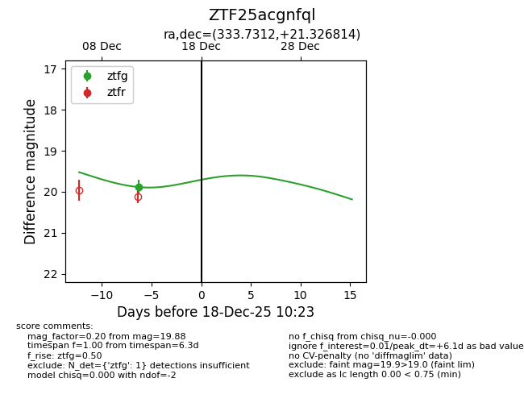
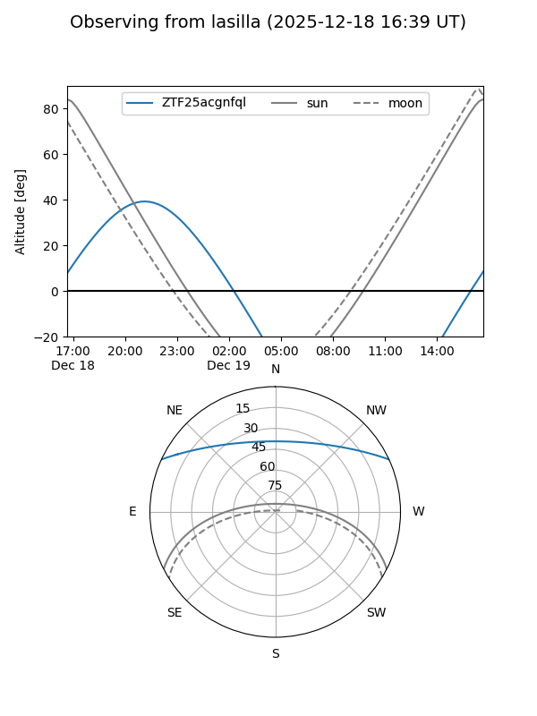
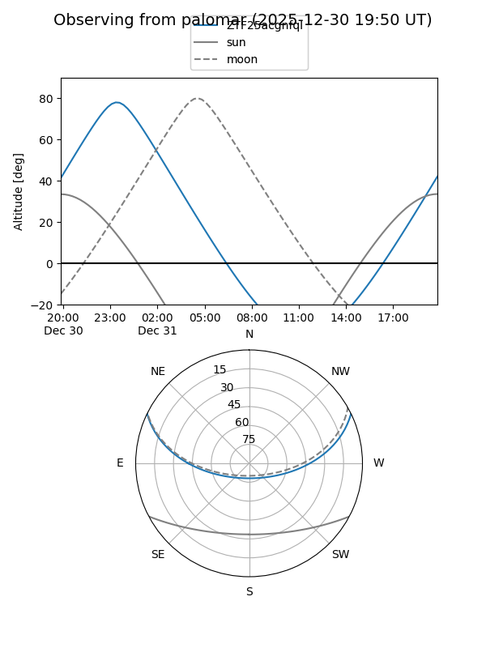

ZTF25acgnfql
Target ZTF25acgnfql at 2025-12-18 11:18
Aliases and brokers:
FINK: fink-portal.org/ZTF25acgnfql
Lasair: lasair-ztf.lsst.ac.uk/objects/ZTF25acgnfql
ALeRCE: alerce.online/object/ZTF25acgnfql
alt names
ZTF25acgnfql (ztf,fink_ztf)
Coordinates:
equatorial (ra, dec) = 333.7312,+21.32681
equatorial (HMS+DMS) = 22:14:55.49,+21:19:36.53
galactic (l, b) = (80.9455,-28.50804)
Photometry
last ztfg=19.88
1 ztfg detections
Lightcurve

Visibility


Additional plots